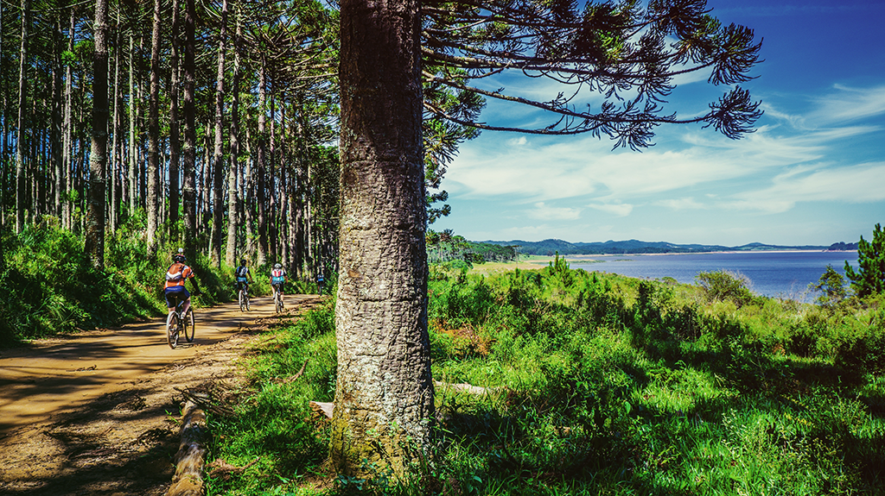

Bozeman, Montana Bike Tours
Lake Loop Guided Tour: $200 per person
This one-day tour takes you around the beautiful Bozeman lake. We’ll begin the 10 mile tour in Bozeman and make our way through spectacular mountain ranges, quiet country roads, and arrive at Bozeman lake to enjoy a picnic. You will be able to spend some time exploring the lake and the area surrounding it. When we are ready to return, we will make our way back to Bozeman. The return will be leisurely cruise through wheat fields and ranchlands.
Th Lake Loop Tour is great for beginners who are interested in mountain biking, but not yet ready for steep climbs and narrow paths.
Duration: 1 days
Distance: 10 miles miles
Skill Level: Beginner
Space is limited – Book online today!
Click For Availability
Lake Loop Guided Tour: $200 per person
On this stunning tour you’ll experience Big Sky Country in all its glory. We’ll travel through spectacular mountain ranges and broad scenic valleys, enjoy quiet roads, and explore terrain that boasts loads of history and hosts more cattle than humans.
The tour will kick off in Bozeman and travel across high plains to the blue-ribbon waters of the Madison River. We’ll climb through the Tobacco Root Mountains before descending past the historic ghost towns of Virginia City and Nevada City. Our group will follow the Jefferson River into the ranching town of Dillon, where we’ll take in the remote Pioneer Mountains Scenic Byway. We’ll briefly parallel the Big Hole River before ascending to the Continental Divide and stunning 360-degree views. Then we’ll roll into the legendary copper mining city of Butte and toward the headwaters of the Missouri River, so prominent in the journals of Lewis and Clark. From here, it’s a leisurely cruise through wheat fields and ranchlands back to Bozeman, and the completion of this grand Big Sky loop.
Duration: 7 days
Distance: 100 miles
Skill Level: Intermediate
Space is limited – Book online today!
Click For Availability